AI PRODUCT DAILY / 2026-11-08
剪辑少返工，代理留证据
从视频导出和对象移除，到浏览器录制、灵巧手与触觉传感，看看工具怎样处理具体步骤。
2026年11月8日 · 早间刊
进入今日方向与目录 →AI PRODUCT DAILY / 2026-11-08截止 04:06:48 Toronto / 09:06:48 UTC
今日方向与项目目录
AI PRODUCT DAILY / 2026-11-08产品／官方更新 · 2026-11-07 · 近三日 / 边界见深读
Zella修复变速片段导出卡死，剪完的视频更容易真正交付
Zella官方Mac编辑器截图，非本刊实际操作 ↗ 原始图证Zella是Mac和iPhone上的本地视频编辑器，适合口播、录屏和短视频。
录制或导入素材，按需运行Auto-Polish，再在时间线上修改；字幕单独生成。
11月7日Mac1.0.11修复含加速片段的项目导出中途停住，并提示导出何时不再推进。
免费导出限两分钟、1080p；AI Assistant的文字请求使用自带密钥联网，不能把所有功能称为离线。
产品判断
这次增量是完成与恢复反馈，不是新推出一套自动剪辑。
AI PRODUCT DAILY / 2026-11-08产品／官方更新 · 2026-11-06 · 近三日 / 边界见深读
Alexa把补货和选礼物接进短信，先从美国受邀用户开放
 Amazon官方Alexa购物短信示例，非本刊购买测试 ↗ 原始图证
Amazon官方Alexa购物短信示例，非本刊购买测试 ↗ 原始图证Amazon让部分美国用户通过短信使用Alexa for Shopping，不用每次先打开购物应用。
接受条款并绑定手机号后，发送需求或照片，接收商品建议、组购物车；购买须按相应授权执行。
11月6日开始小范围邀请，后续数周扩大；新变化是短信入口，不是购物能力首次出现。
普通补货示例要求用户批准；此前的目标价自动购买是另行设定的机制，不能混成所有短信都会下单。
产品判断
随手记下的需求更容易变成订单，但选品、数量和送达日期仍需明确。
AI PRODUCT DAILY / 2026-11-08硬件／独立评测 · 2026-11-06 · 近三日 / 边界见深读
VIVE Eagle把AI入口放在镜腿，收进眼镜盒却不会顺便充电
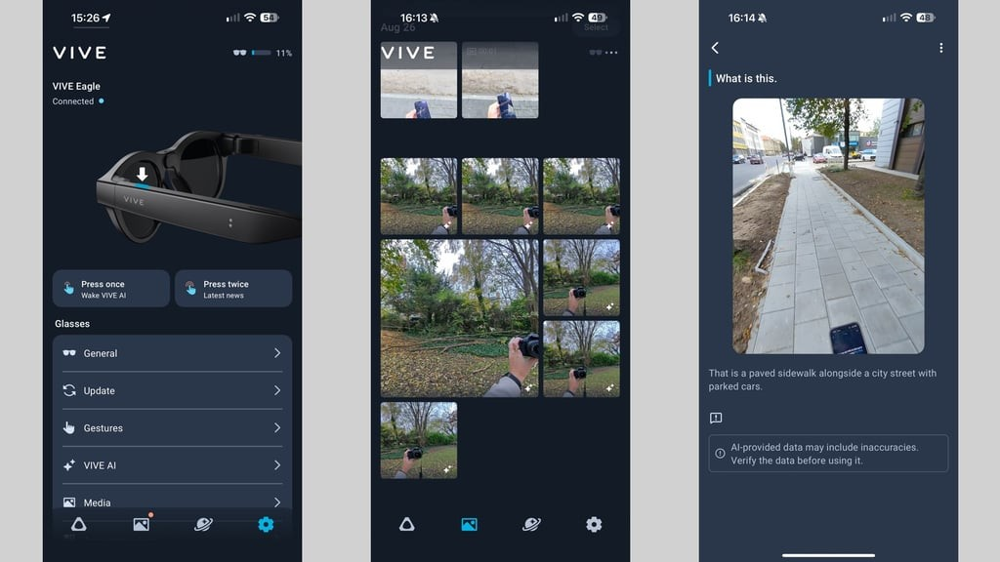
Wareable评测中的VIVE Connect设置、媒体与看图问答界面 ↗ 原始图证VIVE Eagle把拍摄、通话和语音助手放进日常眼镜，11月6日新增的是独立评测，不是再次首发。
按镜腿按钮或说话，摄像头和麦克风提供输入，手机应用连接AI服务；开放式扬声器给出回答。
评测者认可操作响应，却反复忘记接磁吸线；普通收纳盒没有充电功能。
拍摄指示灯、离脸停拍和遮挡检测限制拍摄；云端AI处理不能写成全本地。
产品判断
佩戴后好用只是第一步，摘下后的充电动作会影响第二天能否继续用。
AI PRODUCT DAILY / 2026-11-08硬件／独立上手体验 · 2026-11-07 · 近三日 / 边界见深读
Snap Specs把文档键盘放进视野，长时间办公是否舒服仍待验证
 TechRadar现场上手的Snap Specs实物照 ↗ 原始图证
TechRadar现场上手的Snap Specs实物照 ↗ 原始图证11月7日独立上手展示透明显示眼镜里的文档、翻译和浏览器；这是体验报道，不是到货证明。
手势操作浮空界面，语音提问或翻译，文字出现在视野中；也可以连接蓝牙键盘。
官方列出51度视场和双芯片，售价2195美元的产品仍为预订，充电盒蜂窝版本另计。
相机、麦克风和位置权限各有用途；不用手机跟随不等于不需要网络或云端。
产品判断
短演示能证明交互存在，不能证明悬空输入适合一整天写作。
AI PRODUCT DAILY / 2026-11-08产品／官方更新 · 2026-11-07 · 近三日 / 边界见深读
Turnstone让用户决定模型接替顺序，额度耗尽后不用重建对话
 Turnstone官网代理工作区示例；非本刊操作测试 ↗ 原始图证
Turnstone官网代理工作区示例；非本刊操作测试 ↗ 原始图证Turnstone在Mac上组织有各自任务和记忆的代理，连接用户已有的模型账号。
分配任务和模型，再设备用提供商顺序；当前选择不可用时按偏好接替，并保留对话上下文。
11月7日0.8.7新增备用顺序控制、可展开表格和直接修改工作规则。
本地保存记忆不等于推理离线；模型账号仍有自己的费用和限制，云端持续运行仍有可用性限定。
产品判断
接替顺序减少中断，但更换模型后仍要核对它是否正确理解未完成任务。
AI PRODUCT DAILY / 2026-11-08产品／官方更新 · 2026-11-07T05:15:00Z · 近三日 / 边界见深读
After Effects 27开始推出，助手能整理工程和修表达式，撤销仍按步骤进行
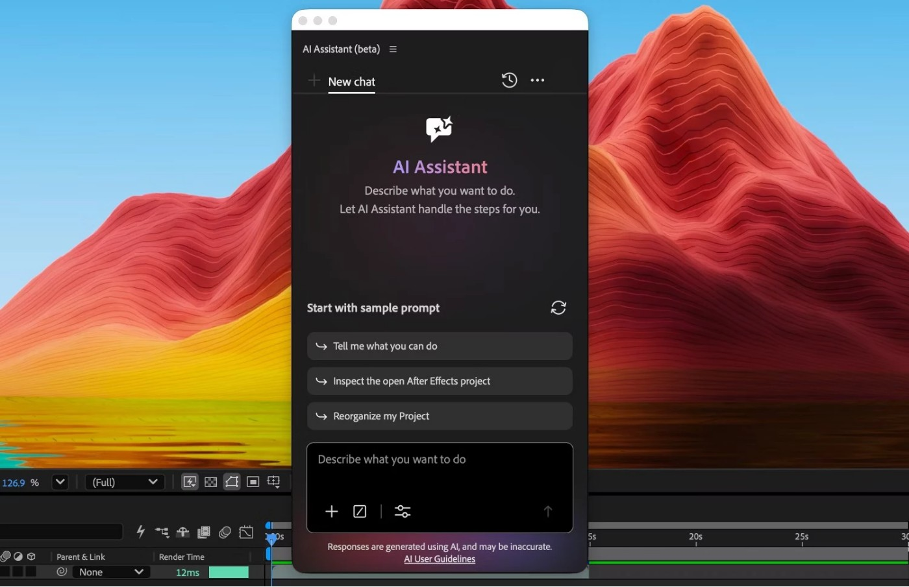
Adobe官方After Effects助手界面，来自27.0发布预告 ↗ 原始图证After Effects 27.0面向接手复杂工程、调试表达式和制作动效的人。
选中图层或属性，描述整理、解释或修改要求；结果留在工程里继续编辑。
11月7日开始分批推出；助手此前已有beta，完整发布资料预告11月10日提供。
默认逐动作询问许可，也可自动批准；Undo一次撤回一个动作，不是整个请求。
产品判断
生成视频仍是素材，不能像关键帧逐项修改；上线前应检查依赖和实际画面。
AI PRODUCT DAILY / 2026-11-08产品／官方更新 · 2026-11-06T09:21:00Z · 近三日 / 边界见深读
Premiere移除杂物前能看积分，助手的整段请求却要运行后才知道用量
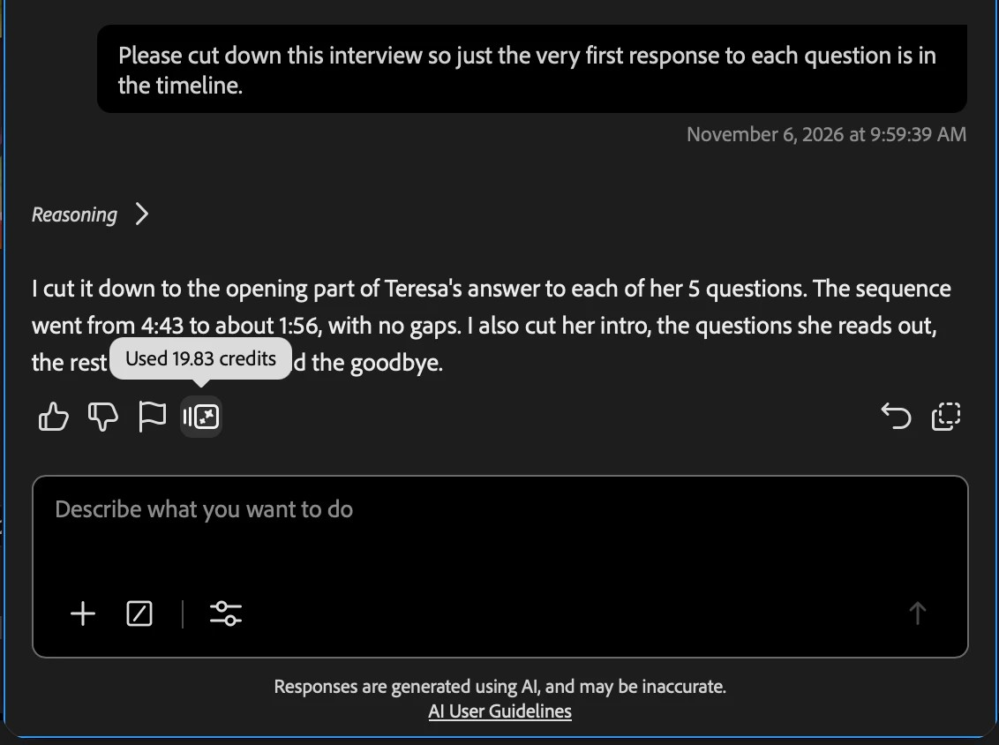
Adobe官方Premiere助手积分显示界面 ↗ 原始图证Premiere beta新增画面杂物移除，并调整AI Assistant的使用计费。
画遮罩、跟踪全段并检查阴影反射，确认积分后生成；结果留在时间线，可重做或恢复原片。
11月6日起助手取消免费日周限额，改用计划内Firefly积分。
移除目前限10秒、480p至1080p、30fps以内；云端处理，不支持HDR或10-bit。
产品判断
移除有事前价格；助手工具链消耗只在完成后显示，预算体验不同。
AI PRODUCT DAILY / 2026-11-08产品／官方更新 · 2026-11-04T04:44:00Z · 本周回看
Illustrator把一组图标生成成可改矢量，风格一致之外还要检查识别度
 Adobe官方Icon Sheets面板与画板中的矢量图标 ↗ 原始图证
Adobe官方Icon Sheets面板与画板中的矢量图标 ↗ 原始图证Icon Sheets适合需要一组界面图标、又不想逐个重画的设计师。
列出要画的图标，选择风格或参考，生成后单独修改，再把矢量放进画板。
11月4日加入Illustrator beta31.1.49，目前只有英文版beta。
可展开查看模型理解出的图标清单；结构变化和风格变化分开选择。
产品判断
矢量可编辑省掉描摹，但细节一致不代表用户能认出含义；小尺寸、深浅背景仍需检查。
AI PRODUCT DAILY / 2026-11-08开源工具／官方版本记录 · 2026-11-08T02:24:37Z · 窗口内观察
Three-Live把3D场景塞进分享链接，手机扫码后再检查原生输出
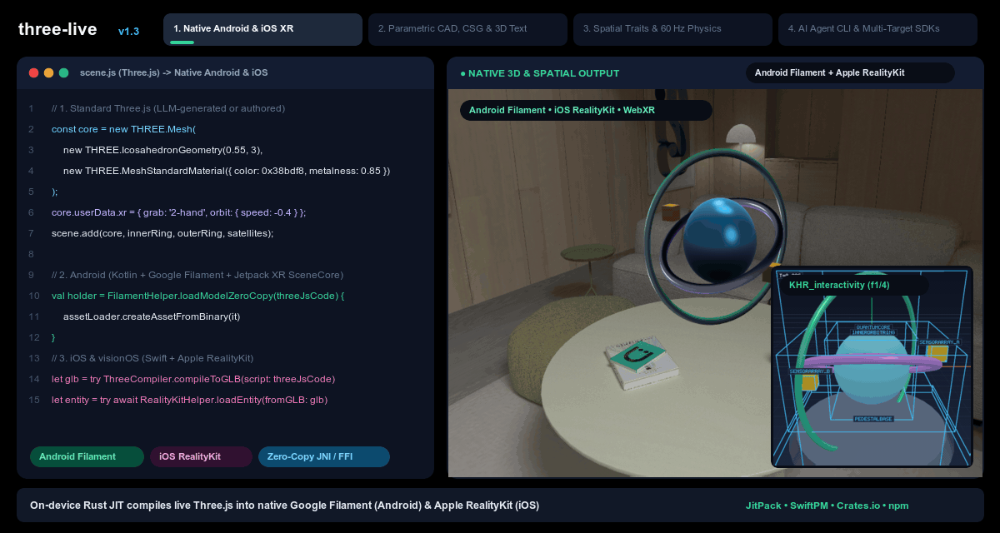
作者提供的Three-Live代码与渲染展示；不是实机测试或1.3.2分享弹窗截图 ↗ 原始图证Three-Live面向用代码和AI辅助制作3D场景的开发者，连接网页预览与移动端原生格式。
1.3.2将场景压缩进URL片段，Share生成链接和二维码；手机打开后在客户端解码。
Native Outputs列出网格数、GLB/USDZ大小及Android、iOS、Web接入片段。
CLI与MCP链接工具先验证场景；设备的AR兼容性仍需分别确认。
产品判断
省去为了看一个原型反复复制代码、搭分享页的步骤；二维码不等于实机适配已完成。
AI PRODUCT DAILY / 2026-11-08开源工具／官方版本记录 · 2026-11-07T14:37:41Z · 窗口内观察
KiCad MCP Pro让新旧本地服务并行，升级时不用先杀掉旧进程
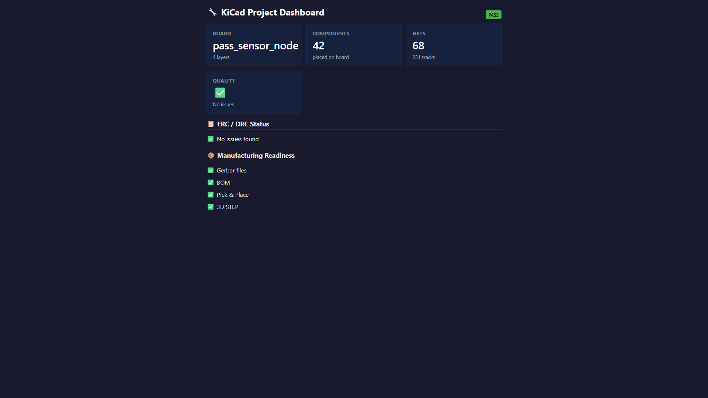
仓库提供的项目审查面板示例；不是4.9端口恢复弹窗，也不代表实板验收 ↗ 原始图证KiCad MCP Pro让AI客户端检查原理图、PCB及制造输出，4.9重点修复本地服务升级衔接。
3334端口仍有健康旧服务时，可选择保留它，在3335启动版本匹配的新后端。
面板地址和诊断命令随选择更新；备用端口占用就明确失败。
默认只读检查与受控写入分开，部分原生和Cloud接入仍待实机验收。
产品判断
升级恢复减少手动清理进程，却不替代工程师的电气、制造和发布判断。
AI PRODUCT DAILY / 2026-11-08开源工具／官方版本记录 · 2026-11-08T04:39:13Z · 窗口内观察
Unity MCP把Cloud与本地模式说清楚，避免守着错误地址等连接
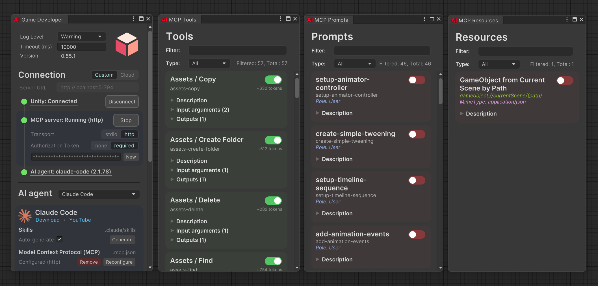
作者提供的旧版0.55.1连接与工具窗口，说明模式入口；非1.8实测截图 ↗ 原始图证Unity MCP连接AI客户端与Unity编辑器、场景操作和测试。
1.8在Cloud模式启动时说明实际端点及被忽略的本地地址；连接失败提示切换Custom的路径。
更新回应了用户配置localhost却仍连云端、等待超时的实际问题。
新凭据目录覆盖项要求绝对路径，隔离测试存储；不会自动替用户更改连接模式。
产品判断
重点是让故障落到可理解的配置项，而非把所有Cloud错误都归因于选错模式。
AI PRODUCT DAILY / 2026-11-08开源工具／官方版本记录 · 2026-11-08T00:02:53Z · 窗口内观察
Sogni修正视频选区的尺寸传递，遮罩不再套用生成视频的缩放规则
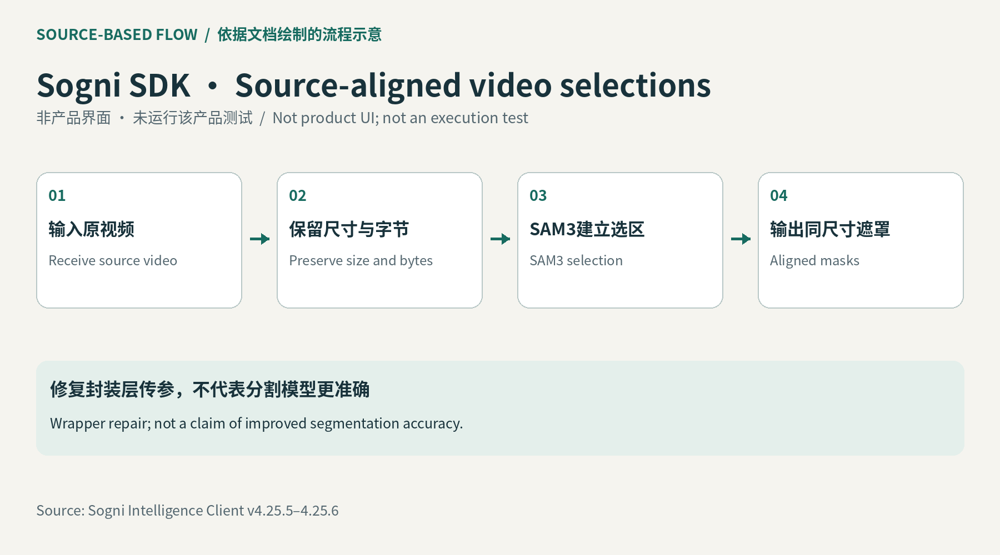
依据维护者发布记录绘制的SDK流程示意，非产品界面或实测 ↗ 原始图证Sogni Intelligence Client是给开发者接入创作代理的Node.js SDK，需要Node18以上。
上传视频、给SAM3文字与帧位置后，SDK保留源尺寸和媒体字节，供选区遮罩使用。
4.25.5将选区处理与生成模型的尺寸归一化分开；4.25.6传递有序GIF参考。
这不是新的消费剪辑界面，也没有证明分割准确率提高。
产品判断
对接入方，最重要的是同一视频和遮罩继续使用同一坐标，减少边界错位的排查。
AI PRODUCT DAILY / 2026-11-08开源工具／官方版本记录 · 2026-11-07T19:32:18Z · 窗口内观察
browser-control-mcp录下标签页操作，也让浏览器连接对象更明确
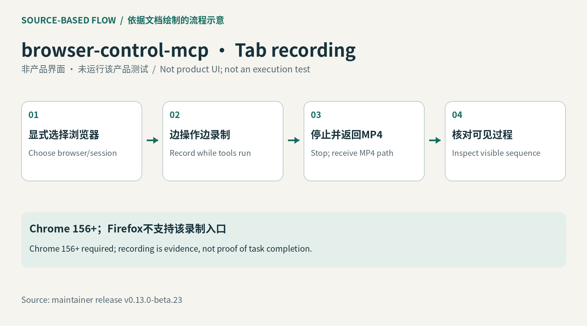
依据官方接口绘制的流程示意；非产品界面、未执行测试 ↗ 原始图证这个MCP工具让代理操作真实浏览器并检查运行中的JavaScript。
beta.23可在Chrome156以上开始标签页录像，同时继续操作，停止后返回MP4路径、大小和时长。
不传端口时启动自己的Chrome；明确传端口才按该路径附着现有浏览器。
Firefox不支持该录像；远程主机和用户配置仍有另外的连接规则。
产品判断
视频补足截图看不到的过程，但定位错误仍需要网络、调用栈与状态证据。
AI PRODUCT DAILY / 2026-11-08开源工具／官方版本记录 · 2026-11-05T21:15:33Z · 近三日 / 边界见深读
DeepAgents把模型拒绝与任务成功分开，压缩边界也不再只靠位置
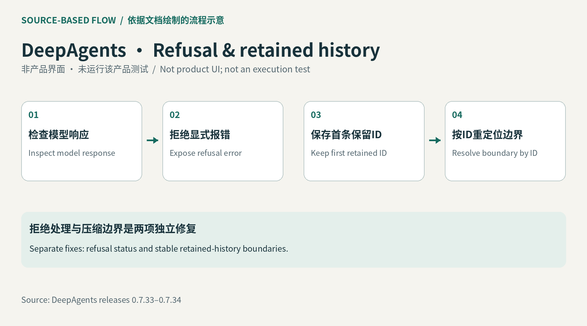
依据官方接口绘制的流程示意；非产品界面、未执行测试 ↗ 原始图证DeepAgents给多步骤代理提供工具、子代理及上下文管理。此项为近三日补充。
0.7.33识别模型拒绝，默认以明确错误或子任务状态报告，避免空结果看起来已成功。
0.7.34按消息ID定位压缩后的保留边界，降低前文编辑引起的位置漂移。
旧记录仍有索引回退；子代理报错时，未返回的文件和待办状态不能假装已提交。
产品判断
这些修复改善状态可信度，不保证摘要完整，也不把拒绝自动当成应绕开的障碍。
AI PRODUCT DAILY / 2026-11-08产品／官方更新 · 2026-11-06 · 近三日 / 边界见深读
Perplexity给长期任务配队友，排队指令与角色额度决定怎样接手
 官方角色权限界面：Computer、个人电脑与运行力度设置 ↗ 原始图证
官方角色权限界面：Computer、个人电脑与运行力度设置 ↗ 原始图证Perplexity Computer面向需要持续整理资料、跟进频道和交付文件的人。Teammates仍是个人Max研究预览。
写下职责、触发时机和交付位置，连接服务；队友可以并行分工并检查结果。
运行中可暂存后续消息，等当前轮结束逐条处理，也能编辑、删除或立即发送。
企业按角色限制Computer推理强度和速度；多个角色的权限叠加。
产品判断
本地Mac模式另属一种执行路径，不等于云端Teammates都离线。高频任务仍消耗额度。
AI PRODUCT DAILY / 2026-11-08开源／机器人接口 · 2026-11-06 · 近三日 / 边界见深读
Arduino把传感器接进ROS话题，Linux代理节点仍要运行
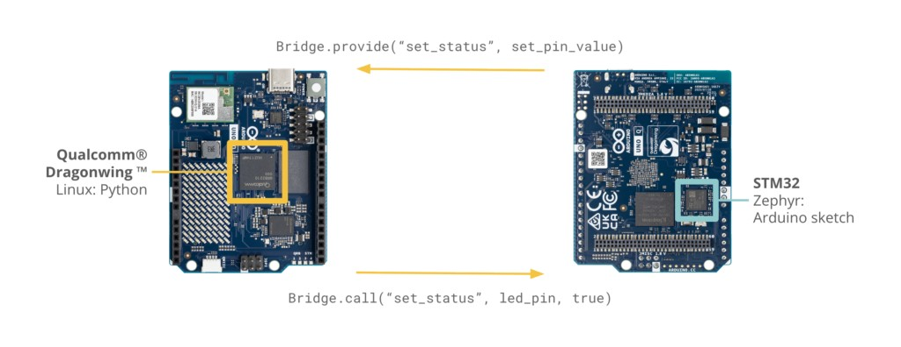
Arduino官方异构板卡与Bridge调用示意；不是已执行的ROS测试 ↗ 原始图证Arduino十一月六日说明RouterBridge ROS的接法，让开发者把板上实时输入接给ROS 2。
草图注册函数，消息经RPC跨越微控制器与Linux，再成为话题、服务或动作；速度命令可以反向送回执行端。
官方示例包括IMU数据与运动命令；它是接口代码，不是新增传感器或自动驾驶能力。
仓库仍标WIP，目前仅列VENTUNO Q；Linux端还需arduino_proxy与路由服务。
产品判断
少写一层自定义通信后，单位、时间戳、断连和停机行为仍要逐项验证。
AI PRODUCT DAILY / 2026-11-08硬件／芯片官方发布 · 2026-11-03 · 本周回看
STM32H7P把信号处理和小模型留在控制板上，开发板仍待交付
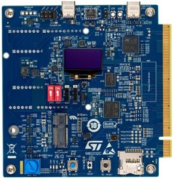
ST官方STM32H7P5I-DK开发板实物图 ↗ 原始图证STM32H7P面向电机、电源和工业控制；最早核到官方十一月三日文章，本期是一周回看。
传感信号进入微控制器，由硬件信号处理器做计算，带Neural-ART的型号运行神经网络，再由控制程序输出动作。
它增加控制板上的计算选择，不是可以直接安装应用的AI电脑，也没有新增终端产品证明。
当前是客户送样，量产和开发板指向2027年1月；不同料号和外设配置要单独核对。
产品判断
团队需要测整条采样、推理和控制链，不能把峰值算力换算成实际响应速度。
AI PRODUCT DAILY / 2026-11-08硬件／机器人灵巧手 · 2026-11-05 · 本周回看
天巧一号用七自由度与六处触觉感知，把对捏和力控交给整机开发者
阿童木官方天巧一号演示画面；厂商示例，非独立测试 ↗ 原始图证天巧一号面向人形整机、精密装配与科研遥操作，当前开放样机测评与定制适配。
后置驱动拉动肌腱，五指完成对捏；五处指尖与一处掌心反馈接触和压力。
手与原生运控一起交付，可切换位置和柔顺力控；七自由度不等于每个关节独立驱动。
视觉融合与自主抓取仍需集成；公开材料没有完整负载、寿命和价格表。
产品判断
减少的是末端硬件与控制器拼装，能否稳定处理实际工件仍要验证。
AI PRODUCT DAILY / 2026-11-08产品／实验室机器人系统 · 2026-11-06 · 近三日 / 边界见深读
天枢把实验任务接到仪器与转运机器人，结果按样品送回下一轮
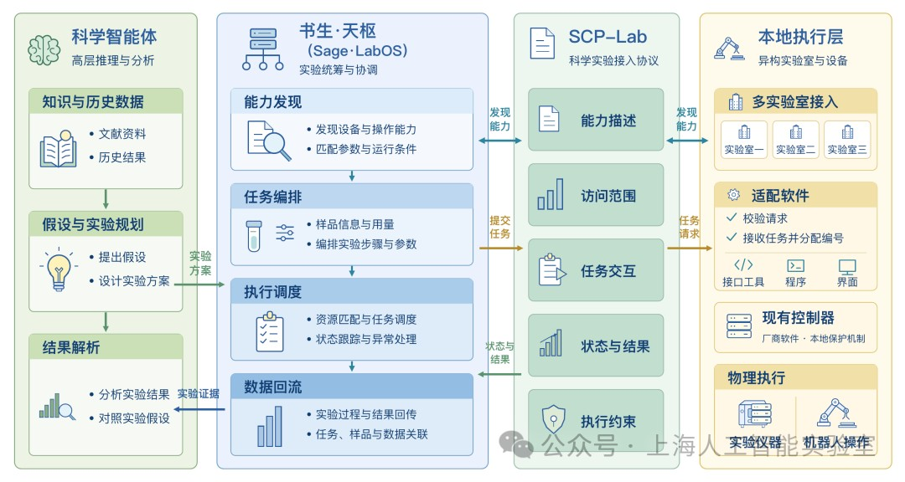
作者提供的LabOS、SCP-Lab与设备执行层架构示意，非产品界面 ↗ 原始图证天枢面向多仪器湿实验，把科研智能体提出的方案交给设备和机器人执行。
SCP-Lab描述设备能力，ADK接入接口；系统编排制备、转运和检测，再关联样品与结果。
临港团队报告五轮迭代、335个LNP配方合成验证，包封率由67%到98%。
现场安全联锁仍由本地系统掌握；实验指标不能当作临床疗效。
产品判断
少的是跨设备追问状态；接入、验收条件和样品身份仍要逐项配置。
AI PRODUCT DAILY / 2026-11-08论文／机器人研究系统 · 2026-11-04T16:46:03Z · 本周回看
PyRUA-REAL把现场试错留下为程序，插网线仍需要在线代理介入
 作者记录的八种真实机器人任务场景，非商品使用场景 ↗ 原始图证
作者记录的八种真实机器人任务场景，非商品使用场景 ↗ 原始图证研究者代理选方法，工程师代理写代码并运行双臂机器人，失败记录与技能保存在仓库。
输入任务与变化范围，读取相机和机器人状态；修改后的程序可脱离运行时语言模型执行。
论文在八种真实任务上研究开发过程，不能把跨版本91.1%记录当成一个最终程序的可靠性。
网线插入十天仍未形成无需代理的解法；更多审阅角色也可能拖慢获得实物反馈。
产品判断
值得保留的不只是成功代码，还包括当时的布局、测量方式和失败原因。
AI PRODUCT DAILY / 2026-11-08论文／研究原型 · 2026-11-05T18:53:16Z · 近三日 / 边界见深读
OopsieRecover把人接管机器人的理由留下来，下一次遇到相似错误再调用
 作者研究图：人工纠正机器人动作并提供语义理由，非商业产品界面 ↗ 原始图证
作者研究图：人工纠正机器人动作并提供语义理由，非商业产品界面 ↗ 原始图证面向需要反复接管机器人任务的研究团队，记录的不只有纠正动作，还有人为什么这样改。
操作者接管、修正并解释；视觉语言模型把解释落到物体点集，生成触发条件和动作评分，运行时从基础策略的候选动作中选择。
基础VLA保持冻结；真实机器人每任务只用3至6次语义干预，测试覆盖物体位置及场景变化。
视觉定位、动作预测和候选动作都可能出错；空间规则不等于接触力约束。
产品判断
它让接管经验可以检查和复用，但人仍需说明意图，不能把少量示范写成通用安全保证。
AI PRODUCT DAILY / 2026-11-08论文／研究原型 · 2026-11-04T04:24:45Z · 本周回看
LumiTac用彩色光读出推压和扭转，把小触点变成六轴机器人输入
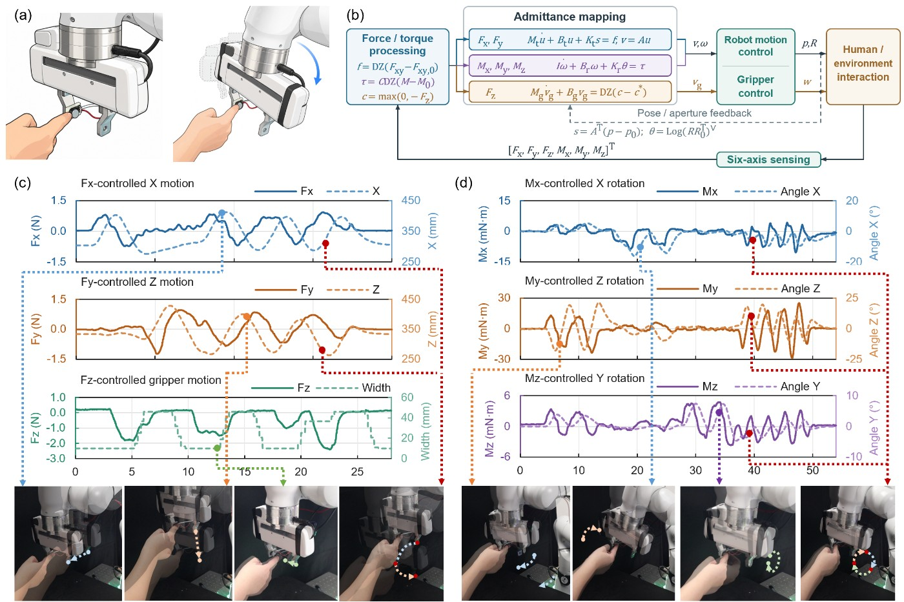
作者真实机器人触觉引导实验图，含控制响应曲线；不是量产模组展示 ↗ 原始图证LumiTac是直径12毫米的研究传感器，面向机器人手指、夹爪和触觉输入。
硅胶受力改变两块电路板之间的光路，五组发光与接收器形成20路读数，小型神经网络输出三向力和三向力矩。
无摄像头，传感头厚4.75毫米、不到2克；约7美元仅为元件估价。
论文分别展示仿真机械臂控制和真实机器人触觉引导；亚毫秒数字只含主机软件处理。
产品判断
推、压、扭可以共用一个入口，但映射、死区和标定决定操作者能否稳定控制。
AI PRODUCT DAILY / 2026-11-08论文／研究原型 · 2026-11-05T16:55:55Z · 近三日 / 边界见深读
肌电目标先给定，模型再生成机器人练习中的施力轨迹
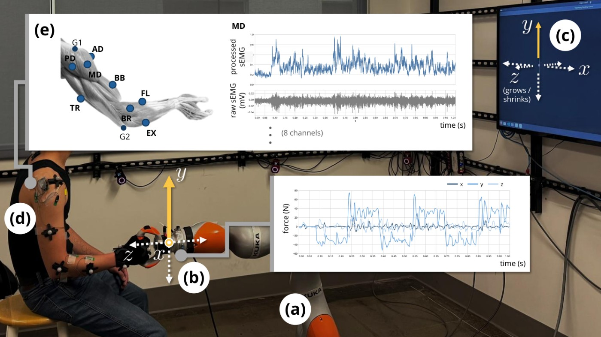
作者实验平台：机器人把手、力传感器、屏幕追踪与表面肌电；健康参与者研究 ↗ 原始图证这项研究把指定肌肉激活序列作为输入，预测人握住机器人把手时应跟随的施力目标。
现成协作臂、六轴力传感器和八路表面肌电共同记录练习，屏幕小球反馈用力结果；Transformer与流匹配生成轨迹。
16名健康参与者提供训练测试数据，另进行5人实时目标追踪验证。
实验是等长施力，不是机器人带动患者关节运动；没有临床恢复效果证据。
产品判断
短时个人校准可能减少反复试练，但电极位置与个体差异仍需处理。
AI PRODUCT DAILY / 2026-11-08论文／研究原型 · 2026-11-05T03:36:10Z · 本周回看
这套VR不适预测模型允许整路传感缺席，但还没有实时预警验证
 作者多模态预测架构示意，非已发布VR预警界面 ↗ 原始图证
作者多模态预测架构示意，非已发布VR预警界面 ↗ 原始图证研究针对不同VR设备可取得的生理与动作信号不一致，避免只有完整传感配置才能分析。
心电、皮肤电、眼动与头动先分别编码；可用性掩码让融合网络忽略缺失整路，再预测不适评分。
三个现有数据集用于离线验证，模型训练还对齐不同模态的表示。
整路缺失不等于任意时点坏数据；未训练过的模态也不能直接接入。
产品判断
这是预测研究，没有证明自动减速、切换视角或暂停能减少用户不适。
AI PRODUCT DAILY / 2026-11-08论文／研究原型 · 2026-11-05T05:49:01Z · 本周回看
ReviewMap先分清审稿人在质疑证据还是贡献，再让人决定如何回应
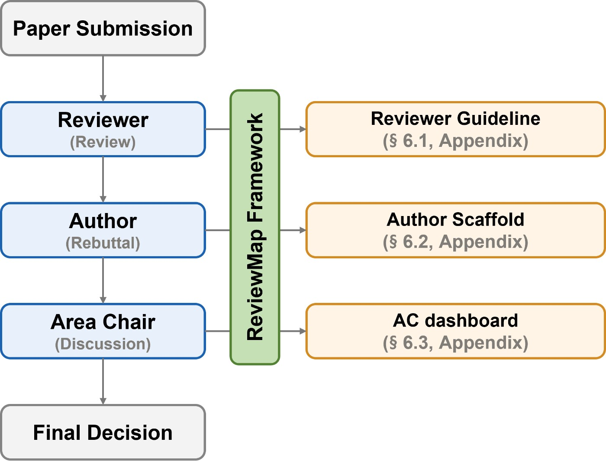
作者提出的ReviewMap角色与信息流示意；看板效果尚未用户验证 ↗ 原始图证ReviewMap分析审稿评论，区分对论证和学术标准的评估，与对贡献价值及会议适配的判断。
评论分段后由多模型标注并投票，保留分歧与未解决属性，再提出供作者或审稿人检查的结构。
研究覆盖500篇ICLR论文、17,654条评论；五人标注470条开发样本。
模型间标签一致不等于评论正确；更细的理由属性可靠性较低。
产品判断
作者回应菜单和领域主席看板仍是研究提案，不能写成自动录用或审稿人评分产品。